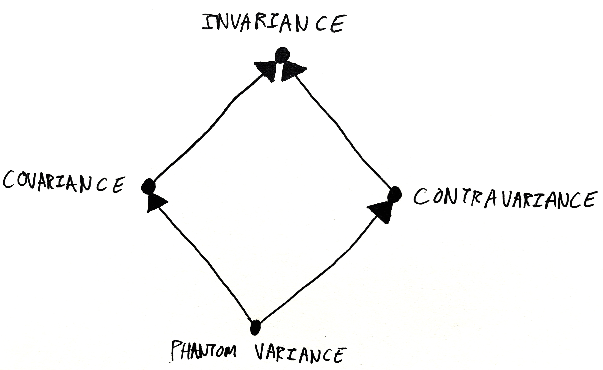

The Fourth Type of Variance
Given a polymorphic type, like List, what can we say about the relationship between different usages of that type? If A and B are related, is List[A] related to List[B]? Variance is the word for this type of relationship, and it turns out there are a few different answers to that question, depending on the type you're asking about.
Covariance
Probably the most familiar situation is when the parameterised types are related in the same way as the parameter. This is the type of variance exhibited by most "container" types, like List.
sealed abstract class List[+A]
val cats : List[Cat] = List(Cat("Tilly"), Cat("Charlie"), Cat("Izzy"))
val animals : List[Animal] = cats
List's parameter A is annotated with +, so it'll be treated as covariant. This allows you to use a List[Cat] any time you need a List[Animal]. A list of Cats is a list of Animals, because every Cat is an Animal. The subtype relationship of the container goes in the same direction as the subtype relationship of the elements. (In C# + is pronounced out, as in IEnumerable<out T>.)
Variance is visible even in non-subtyping-based languages. Haskellers'll be familiar with covariant functors. It's the type of functor exhibited the the standard Functor class.
class Functor f where
fmap :: (a -> b) -> f a -> f b
instance Functor [] where
fmap f xs = [f x | x <- xs]
This chimes with the intuition that a functor f is a container of sorts. If you can write a function to convert each a in the container into a b, then fmap can convert a container of as into a container of bs by converting each item in the container.
In general, a type is covariant if its parameter is used as an output. An object which produces Cats can be used to produce Animals. All you have to do is ignore the cattiness of the animals you get out of the producer.
Contravariance
Contravariance, covariance's evil twin, is the word for when the parameterised types are related in the opposite way as the parameters. Scala's Ordering, which determines which way round to put two objects (like C#'s IComparer), is an example of a contravariant type.
trait Ordering[-A] {
def apply(x : A, y : A) : Int
}
val animalOrdering : Ordering[Animal] = Ordering.by[Animal, Int](x => x.cuteness)
val catOrdering : Ordering[Cat] = animalOrdering
The - symbol denotes a contravariant parameter, allowing us to use an Ordering[Animal] as an Ordering[Cat]. (C#ers say in, as in IComparer<in T>.) If you know how to compare two Animals (perhaps by comparing their cuteness), you can certainly compare two Cats. The subtype relationship of the comparers goes in the opposite direction to that of the parameters.
The class of contravariant functors in Haskell is just like Functor but with the direction of one of the arrows flipped.
class Contravariant f where
contramap :: (b -> a) -> f a -> f b
newtype Comparer a = Comparer (a -> a -> Ord)
instance Contravariant Comparer where
contramap f (Comparer p) = Comparer (\x y -> p (f x) (f y))
If you can turn bs into as, then you can turn a comparer of as into a comparer of bs by converting the bs into as before they go into the comparer. Note how f is applied to p's inputs in the implementation of contramap.
In general, a type is contravariant if its parameter appears as an input. An object which consumes Animals can be used to consume Cats. All you have to do is forget about the cattiness of the animals before you put them into the consumer.
Julie Moronuki has the best explanation of contravariance that I know of.
Invariance
Invariance is the word for when there's no relationship at all between different usages of a parameterised type.
In Scala a type parameter unadorned with a sign is invariant. The following mutable set type is invariant:
trait Set[A] {
// A appears as both an input and an output
def add(item: A): Unit
def remove(item: A): Unit
def contains(item: A): Boolean
def items(): Iterable[A]
}
In general, a type is invariant if its parameter appears as both an input and an output. You can't use Set covariantly, because A appears as an input to contains, and you can't use it contravariantly because A appears in items's output. There's no subtyping relationship between the parameter and the type. A Set[Cat] is not a Set[Animal]. If it was, you'd be allowed to upcast it and then call add with a Dog:
val catSet = new Set[Cat](Cat("Tilly"))
val animalSet: Set[Animal] = catSet
animalSet.add(Dog("Richard"))
for (cat: Cat <- catSet.items()) {} // uh oh, one of the cats will actually be a dog!
The same logic applies to the opposite situation. A Set[Animal] is not a Set[Cat].
Here's a Haskell class defining Invariant functors.
class Invariant f where
invmap :: (a -> b) -> (b -> a) -> f a -> f b
You have to be able to map as and bs in both directions to convert an invariant functor. This implies that the functor both consumes and produces as: you map items on the way out and on the way in.
newtype Operation a = Operation (a -> a -> a)
instance Invariant Operation where
invmap f g (Operation op) = Operation (\x y -> f (g x `op` g y))
Note how we use f on the output of op and g on the inputs.
The only time I've actually seen this class used is in Ed Kmett's old article about attempting to represent higher-order abstract syntax generically.
Let me spell out the similarity between Invariant functors and Scala's subtype invariance. For Operation a to be convertible to Operation b, a must be convertible to b and b must be convertible to a. For Set[A] to be a subtype of Set[B], A must be a subtype of B and B must be a subtype of A (that is, they must be the same type).
Note that variance is a property of the type parameter (A), not the type constructor (List/Ordering). A given type constructor may have multiple parameters with different variances. Function1[-A, +B], for example.

Combining Variances
An object which produces a producer of As effectively produces As. A type with a covariant type as an output is itself covariant.
// Container returns a covariant type, so Container is covariant
trait Container[+A] {
def toList(): List[A]
}
Consuming a producer of As is basically the same as consuming As. A type which has a covariant type as an input is contravariant.
// Printer consumes a covariant type, so it's contravariant
trait Printer[-A] {
def printAll(items: List[A]): Unit
}
Producing a consumer of As is like consuming As. A type with a contravariant type as an output is contravariant.
// Produces a contravariant type, so contravariant
trait OrderingFactory[-A] {
def getOrdering(): Ordering[A]
}
A consumer of consumers is itself a producer. (You have to be able to produce As in order to feed them to the consumer.) A type with a contravariant type as an input is covariant.
// Consumes a contravariant type, so covariant
trait Sortable[+A] {
def sortBy(ordering: Ordering[A]): Unit
}
Mnemonically, you can think of input parameters as meaning "times -1". Ordering takes As as its inputs, so Ordering is negative. Sortable takes a (negative) Ordering as an input, so it's positive (-1 * -1 = 1). Printer takes a (positive) List as input, so it's negative. This explains Scala's choice of + and - as the syntax for its variance annotations.
The Semilattice of Variances
Now, it turns out that these three types of variance have a relationship to each other. Invariance generalises both covariance and contravariance. Covariant things are also invariant, and contravariant things are also also invariant.
defaultInvmapCo :: Functor f => (a -> b) -> (b -> a) -> f a -> f b
defaultInvmapCo f _ x = fmap f x
defaultInvmapContra :: Contravariant f => (a -> b) -> (b -> a) -> f a -> f b
defaultInvmapContra _ g x = contramap g x
If I was in the business of redesigning Haskell's libraries, I'd even consider making Invariant a superclass of Functor and Contravariant.
class Invariant f where {- ... -}
class Invariant f => Functor f where {- ... -}
class Invariant f => Contravariant f where {- ... -}
So there's this interesting relationship between the three types of variance. They form a little semilattice, of which Invariant is the supremum.
But, hmm, the picture seems asymmetric. Is variance really only a semilattice? Or is there something lurking at the bottom of that picture?
Phantom Variance
Looking at the code above, it appears that Functor and Contravariant both specialise Invariant by ignoring one of Invariant's function parameters. What if we ignored both of them?
class (Functor f, Contravariant f) => Phantom f where
pmap :: f a -> f b
This strange class says that you can map an f a to an f b without needing to map as or bs at all! Intuitively, you can only convert f a to f b for free when f doesn't mention a anywhere in its body.
A functor is Invariant when it has as both as inputs and outputs. Functor specialises Invariant by promising that f doesn't have any input as, so all you need to do is map the outputs. Contravariant specialises Invariant by promising that there are no output as and all you need to do is map the inputs. Phantom, being a special case of both covariance and contravariance, guarantees that there are no as at all in the f.
So the four types of variance form a nice lattice.
For completeness, here's the proof that the superclass constraints make sense:
defaultFmap :: Phantom f => (a -> b) -> f a -> f b
defaultFmap _ = pmap
defaultContramap :: Phantom f => (b -> a) -> f a -> f b
defaultContramap _ = pmap
Phantom types show up every now and then in Haskell. They're used to decorate ordinary values with additional type-level information, either to layer on additional type safety or to give GHC a hint for type inference.
data Proxy a = Proxy -- from Data.Proxy
instance Phantom Proxy where
pmap _ = Proxy
Haskell is the only language I know of with proper support for phantom types, in its role system. (Phantom roughly means forall a b. Coercible (f a) (f b).) Scala doesn't support it, but it'd mean that a type is always a subtype of any other instantiation of that type, even if the type arguments have no relationship.
case class Proxy[±A] // fantasy syntax
val catProxy = Proxy[Cat]()
val dogProxy : Proxy[Dog] = catProxy
Proxy[A] is always a subtype of Proxy[B] (and vice versa!), even when A and B are nothing to do with each other. To a certain extent this defeats the purpose of phantom types. It also breaks antisymmetry --- two different types can both be a subtype of each other --- so subtyping is no longer a partial order. As a language feature, phantom variance probably isn't actually all that desirable.